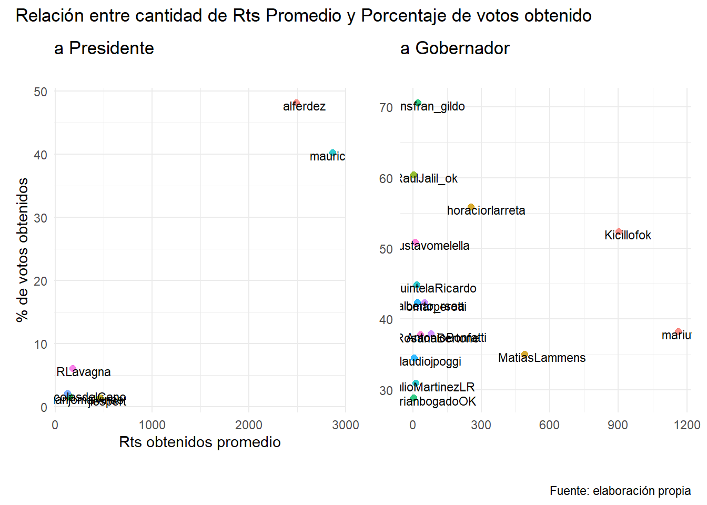
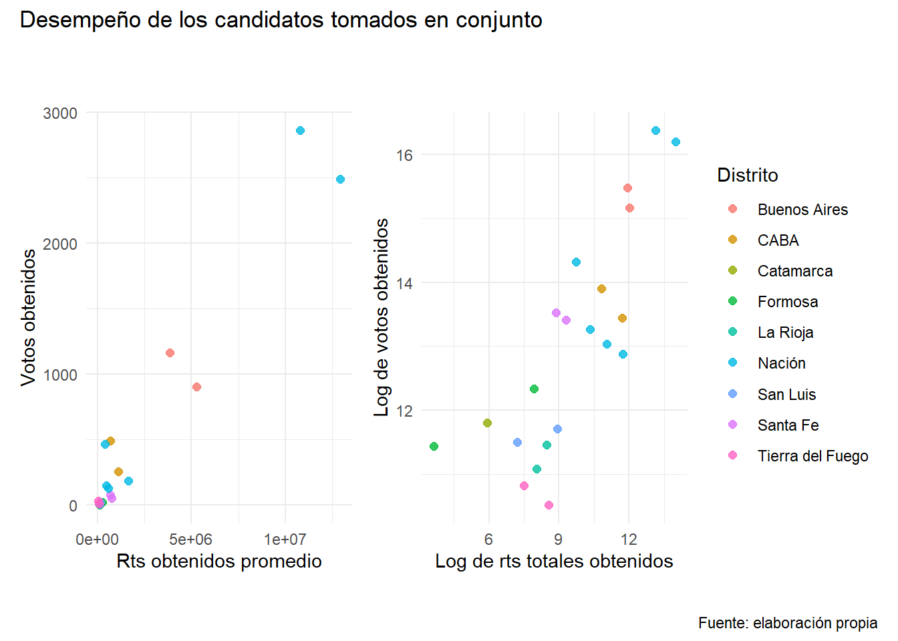

En este post presentamos el primer paso del análisis exploratorio que propusimos hacer.
Comenzaremos presentando el código utilizado. Diagramaremos gráficos que exploran los vínculos entre el desempeño en Twitter y el desempeño en las urnas de nuestros candidatos. Los presentaremos hacia el final, junto a unas breves conclusiones.
Como siempre, debemos ocuparnos de preparar nuestra sesión de r.
Otra vez trabajaremos con paquetes oficiales (¡y conocidos!) y las funciones que desarrollamos a los fines de este trabajo.
# APERTURA DE LIBRERIAS
#paquetes
require(tidyverse)
require(readxl)
require(ggplot2) # para graficar
library(patchwork) # para unir graficos
#propias
source("https://raw.githubusercontent.com/CVFH/Tuits_arg_2019/master/Modules/tuitsCandidatos.R", encoding = "UTF-8") # para trabajar con bases de tuits
source("https://raw.githubusercontent.com/CVFH/Tuits_arg_2019/master/Modules/tablasElectorales.R", encoding = "UTF-8") # para scrappear resultados electorales
source("https://raw.githubusercontent.com/CVFH/Tuits_arg_2019/master/Modules/funcionesGraficos.R", encoding = "UTF-8") # para graficarDemos vida a nuestro análisis invocando a las bases de datos de nuestro interés.
# IMPORTACION DE DATOS / TUITS
# Datos Twitter
# nos importan dataframes con tuits de candidatos: joined_gobernadores y joined_presid
source("https://raw.githubusercontent.com/CVFH/Tuits_arg_2019/master/preparacion_datos_tuits.R", encoding = "UTF-8")
joined_presid <- traerDatosTuits("presid")
joined_gobernadores <- traerDatosTuits("gob")
joined_candidatos <- traerDatosTuits("tot")
# Datos electorales
# nos importan tablas con votos obtenidos por cada candidato: votos_gobernadores y votos_presid
source("https://raw.githubusercontent.com/CVFH/Tuits_arg_2019/master/preparacion_datos_electorales.R", encoding = "UTF-8")
votos_gobernadores <- traerDatosElectorales("gob")
votos_presid <- traerDatosElectorales("presid")¡Ya tenemos nuestros datos!, ahora vamos a trabajarlos
Primero vamos a calcular algunas medidas de la “popularidad” de nuestros candidatos en Twitter: los rts y favs obtenidos, en promedio y en total.
Además vamos adicionar el data frame que contiene estas medidas y nuestras tablas de resultados electorales.
Lo hacemos de manera separada para candidatos a Gobernador y a Presidente. El motivo de mantener bases independientes es que algunas medidas no son directamente comparables, dado el diferente tamaño de los distritos que nos ocupan.
# UNIENDO Y TRABAJANDO DATOS / TUTIS / ELECTORALES
# Provincias
gobernadores_popu <- joined_gobernadores %>%
subset( Campaña == 1 ) %>%
group_by(screen_name) %>%
dplyr::summarise(rts_obtenidos_totales = sum(rts),
favs_obtenidos_totales = sum(fav_count),
cantidad_emitidos_totales = n(),
rts_obtenidos_promedio = rts_obtenidos_totales/cantidad_emitidos_totales,
favs_obtenidos_promedio = favs_obtenidos_totales/cantidad_emitidos_totales
)
# uniendo ambas bases
gobernadores_popu_ranking <- full_join(gobernadores_popu,
votos_gobernadores %>%
subset( Ranking == 1 | Ranking ==2 ) %>%
subset(!is.na(screen_name)),
"screen_name")
# Presidente
presid_popu <- joined_presid %>%
subset( Campaña == 1 ) %>%
group_by(screen_name) %>%
dplyr::summarise(rts_obtenidos_totales = sum(rts),
favs_obtenidos_totales = sum(fav_count),
cantidad_emitidos_totales = n(),
rts_obtenidos_promedio = rts_obtenidos_totales/cantidad_emitidos_totales,
favs_obtenidos_promedio = favs_obtenidos_totales/cantidad_emitidos_totales
)
# uniendo ambas bases
presid_popu_ranking <- full_join(presid_popu,
votos_presid,
"screen_name")Ahora sí, podemos inspeccionar si hay vínculos entre el desempeño en las urnas y el desempeño en la red social. Nuestra exploración es visual :mag: : haremos algunos gráficos.
En el código a continuación, incorporamos los resultados que encontramos más interesantes. Ensayamos algunos gráficos de dispersión adicionales, pero, o bien arrojaban resultados irrelevantes: por ejemplo, entre la cantidad de tuits emitidos y los votos obtenidos; o bien, muy similares a los que muestran los gráficos que siguen, como sea entre la cantidad de favs y los votos obtenidos. 1
Nótese que usamos algunas de las funciones que introdujimos en un post anterior, que desde ya hacen uso y abuso de la gramática de ggplot.
# GRAFICOS DE RELACIONES
# provincias y nacion por separado
# Provincias
# rts / porcentaje de votos
gobernadores_rtspromedio_porcentaje <- plotPointText(gobernadores_popu_ranking,
aes(rts_obtenidos_promedio,
Porcentaje,
colour = Distrito),
aes(label = screen_name)) %>%
formatPlot(plottitle = "a Gobernador", xlabel = "", ylabel = "") +
theme(panel.background = element_rect(colour = "white", fill = "white"))
# Presidente
# rts / porcentaje de votos
presid_rtspromedio_porcentaje <- plotPointText(presid_popu_ranking,
aes(rts_obtenidos_promedio,
Porcentaje,
colour = screen_name),
aes(label = screen_name)) %>%
formatPlot(plottitle = "a Presidente",
xlabel = "Rts obtenidos promedio",
ylabel = "% de votos obtenidos") +
theme(panel.background = element_rect(colour = "white", fill = "white"))
# TODOS LOS CANDIDATOS
# unimos bases
candidatos_popu_ranking <- rbind(gobernadores_popu_ranking, presid_popu_ranking) %>%
subset(!is.na(screen_name))
# Graficamos
# Relaciones entre rts y votos
candidatos_rts_votos <- plotPoint(candidatos_popu_ranking,
aes(log(rts_obtenidos_totales),
log(Votos),
# utilizamos el log ya que hay mucha diferencia entre distritos
colour= Distrito)) +
theme_clean() +
labs(title = " ",
x = "Log de rts totales obtenidos",
y = "Log de votos obtenidos") +
theme(panel.background = element_rect(colour = "white", fill = "white"))
candidatos_rtspromedio_votos <- plotPoint(candidatos_popu_ranking,
aes(Votos,
rts_obtenidos_promedio,
colour= Distrito)) %>%
formatPlot(plottitle = "",
xlabel = "Rts obtenidos promedio",
ylabel = "Votos obtenidos") +
theme(panel.background = element_rect(colour = "white", fill = "white"))
# Twitter con twitter: relaciones entre cantidad de tuits emitidos y votos obtenidos
candidatos_rts_emitidos <- plotPoint(candidatos_popu_ranking,
aes(cantidad_emitidos_totales,
rts_obtenidos_totales,
colour= Distrito)) +
labs(title = "Twitter con Twitter",
x = "Cantidad de tuits emitidos",
y = "Rts obtenidos")Hemos hecho nuestros gráficos. Utilizamos el paquete patchwork para presentarlos de manera más prolija.
# Patchworks
# uniomos los gráficos para su presentación
rtspromedio_porcentaje <- (presid_rtspromedio_porcentaje | gobernadores_rtspromedio_porcentaje) +
plot_annotation(
title = 'Relación entre cantidad de Rts Promedio y Porcentaje de votos obtenido',
caption = "Fuente: elaboración propia")
desempeño_totcandidatos <- (candidatos_rtspromedio_votos | candidatos_rts_votos) +
plot_annotation(
title = 'Desempeño de los candidatos tomados en conjunto',
caption = "Fuente: elaboración propia")Veamos qué hemos encontrado.
Primero, veamos si hay relaciones entre la cantidad de rts y los votos obtenidos
Recuerde el lector que explorando favs obteníamos un resutaldo muy parecido.
rtspromedio_porcentaje 
Vemos que para el nivel nacional parece haber una relación: los candidatos que obtuvieron más votos, A. Fernández y M. Macri, también fueron los más retwitteados. En cambio, en las provincias hay mucha dispersión en la cantidad de votos que obtienen los candidatos, independientemente de la cantidad de rts promedios obtenidos.
Desde luego, esto es esperable: las provincias tienen poblaciones de tamaños muy diferentes (y por ende, podemos suponer, un mayor o un menor “público” dispuestos a dar rt a su candidato preferido). Entonces, veamos qué sucede si comparamos el desempeño en la red social con la cantidad de votos absolutos.
desempeño_totcandidatos
Parece haber un vínculo positivo entre el desempeño en la red social y en las urnas. Sin embargo, también puede que sea bastante débil: la diagonal está dada, en buena medida, por el diferente tamaño de los distritos. Así, los dos primeros candidatos a nivel nacional y el :hash: 1 y la :hash: 2 de la Provincia de Buenos Aires son los que mas rts obtuvieron. Pero dentro de cada distrito, los candidatos de Cambiemos se ubican debajo de la recta de ajuste entre rts y votos obtenidos, mientras que los del Frente de Todxs se posicionan algo por encima.
En cualquier caso, también es cierto que el resto de los candidatos a la presidencia obtuvo rts más o menos proporcionales a sus resultados electorales.
Esto sugiere que sería interesante explorar de manera más sofisticada las relaciones entre el partido de los candidatos, su distrito de pertenencia, la cantidad de votos obtenidos, etc.
¿Y qué hay de la propia actividad en la red social?
El siguiente gráfico sugiere una relación débil o inexistente entre la cantidad de tuits emitidos y los rts obtenidos por nuestros candidatos.
candidatos_rts_emitidos¡Pero claro! La cantidad de tuits que envía a la nube un candidato no es la única medida (de hecho, es una medida bastante mala) de qué tan atractivo es su discurso en esta red social.
Querés explorar un poco más en las palabras y temas abordados por nuestros emisores? :fast_forward: seguime en el siguiente post.
O bien podés volver al inicio :house:
Podrán identificar algunas de estos intentos en este script.↩